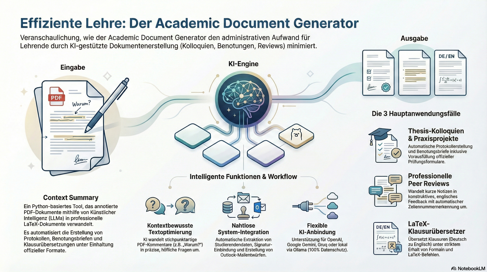

Startseite

Willkommen zur Dokumentation des Academic Document Generators!
Verwandeln Sie annotierte PDFs mithilfe von KI in professionelle LaTeX-Dokumente. Generieren Sie automatisch Protokolle für Thesis-Kolloquien, Benotungsbriefe für Praxisprojekte, Peer-Review-Kommentare und übersetzen Sie LaTeX-Klausuren.
📊 Vier Hauptanwendungsfälle¶
-
🎓 Kolloquium-Protokolle
- Notizen → klare Fragen
- Auto-Metadaten-Extraktion
- Thesis-Zusammenfassung
- Formular-Ausfüllung
- E-Mail-Generierung
-
📊 Praxisprojekt-Benotung
- Metadaten-Extraktion
- Anrede-Bestimmung (Herr/Frau)
- Bewertungsbrief-Vorlage
- Feedback-Zusammenfassung
- Studierenden-E-Mail
-
✍️ Peer Review Kommentare
- Notizen → konstruktives Feedback
- Auto-Zeilennummern-Erkennung
- Markdown-Export
- Immer auf Englisch
- Wissenschaftlicher Ton
-
🔤 LaTeX-Klausur-Übersetzer
- Deutsch → Englisch
- Exam-Klasse optimiert
- Mathe-Formeln erhalten
- Kommentare geschützt
- Struktur-bewusst
🎯 Quick Links¶
-
Schnellstart
In wenigen Minuten startklar mit unserer Installationsanleitung
-
Konfiguration
Konfigurieren Sie Ihre LLM-APIs und Vorlagen
-
Beispiele
Sehen Sie sich Beispiele für erzeugte Dokumente an
-
API-Referenz
Vollständige API-Dokumentation für Entwickler
✨ Hauptmerkmale¶
- 🚀 Einheitliche CLI - Ein einziger
academic-doc-generator-Befehl für alle Aufgaben - 🔍 Extraktion von PDF-Annotationen - Extrahiert Text und Annotationspositionen mit Docling + PyPDF
- 🤖 Unterstützung mehrerer LLMs - Funktioniert mit OpenAI, Groq, Google Gemini oder Ollama
- 🎯 Kontextsensitive Umformulierung - Ordnet Annotationen dem exakt markierten Text und den umgebenden Absätzen zu
- ✍️ Intelligente Kommentar-Veredelung - Schreibt kurze Notizen in vollständige Fragen um
- 📝 LaTeX-Generierung - Erzeugt professionelle Briefe mit TH Köln-Formatierung
- ✒️ Automatische Signatur-Erkennung - Bindet Signaturen aus
data/signature.pngautomatisch ein - 📋 Vorausfüllen von PDF-Formularen - Füllt offizielle Bewertungsformulare automatisch aus
- 📧 E-Mail- & Outlook-Integration - Erstellt Anmelde-E-Mails und Outlook-Entwürfe
- 🌐 Unicode-Unterstützung - Korrekte Handhabung deutscher Umlaute
🛠️ Anforderungen¶
- Python: 3.9 oder höher
- LaTeX: LuaLaTeX empfohlen (for Unicode-Unterstützung)
- LLM API: Mindestens eine von OpenAI, Groq, Gemini oder Ollama
🤝 Mitwirken¶
Beiträge sind willkommen! Bitte lesen Sie die CONTRIBUTING.de.md für Richtlinien.
📄 Lizenz¶
Dieses Projekt ist unter der MIT-Lizenz veröffentlicht.
Hinweis: Dieses Tool unterstützt bei der Erstellung von Dokumentvorlagen — es trifft keine automatischen Benotungs- oder Bewertungsentscheidungen. Alle akademischen Bewertungen verbleiben in der Verantwortung des Prüfers.